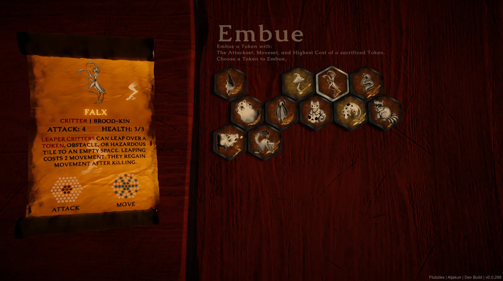

Aljakun
Aljakun is a hex-grid, deck-based tactics game I’m building solo in Unity (C#), with the bulk of the engineering landing in the last five months of active development on top of an eighteen-month history. Beyond gameplay content, it’s a testbed for systems built from scratch: a heuristic beam-search AI opponent, a self-play analytics pipeline that drives card balancing from real match data, procedural map and hex-grid generation, and a fair amount of custom editor and debugging tooling.
The Project
I’m building Aljakun solo, acting as programmer, systems designer, and (out of necessity) AI researcher. It’s the project I use to build things properly from scratch rather than reach for a plugin: a hand-rolled search-based AI, procedural generation with a deterministic seed, and a balancing pipeline driven by real simulated match data instead of gut feel.
I also built, and later retired, a full imitation-learning AI pipeline: state encoding, ONNX inference, an external training loop. It’s documented below alongside everything that shipped, since cutting a system you’ve invested months in is its own kind of engineering judgment, not just a footnote.
Design: Core Concept & Battle
Aljakun is a single-player tactics battle wrapped in a roguelike run: two controllers, a player and an AI, on a shared hex board, with tokens that move and attack under imperfect information. Each match is meant to read as a small, solvable puzzle rather than a stat-trading slog, closer to Into the Breach’s “solve the board” tactics than Hearthstone’s combat math, with a genre neighborhood that also includes Inscryption, Slay the Spire, Blue Prince, and the old Yu-Gi-Oh! board spin-offs.
Each side commands tokens on the hex grid to defeat the enemy Keeper. Positioning is the game: tokens are placed and moved deliberately, and the board itself (terrain tiles, hazards, snares) is as much a piece to read as the tokens are. Every critter token has its own move-set and attack-set, so knowing the shape of a token’s reach before you commit to a placement matters as much as its stats. The AI plays under the same rules as the player for the most part, with a few extra buffs (better deck synergies, stronger tokens) that scale in as a run progresses to keep it challenging.


AI Opponent: Heuristic Beam Search
The AI is a from-scratch decision engine (~8,800 lines across 35 files), built as a best-first beam search over sequences of actions within a single turn rather than a classic minimax tree. Each turn it generates every legal action, expands a priority-ordered frontier capped by beam width and branching factor, under a time budget and a hard node cap, then commits to the best sequence found.
A few pieces push it past a textbook beam search:
- Transposition table: hashes states so duplicate positions from different move orders aren’t re-explored, while better re-arrivals still update the best-known score.
- Quiescence extension: extends depth through “volatile” positions (a tactical exchange mid-resolution) instead of stopping mid-sequence.
- Limited-discrepancy search: biases expansion toward the top-ranked branch at each node, concentrating the time budget where it matters.
- Admissible upper-bound pruning: cuts frontier nodes that can’t beat the current best outcome even in the best case.
- Flat heuristic fallback: kicks in if the tree search times out or degenerates, so the AI never stalls.
The evaluator is a hand-tuned scoring function: material value, discounted hand-card value, per-unit exposure/threat penalties, win-condition-tile proximity, and a dynamic aggression curve based on how far ahead or behind the AI is. Supporting utilities add game-specific awareness: threat propagation along movement paths, danger from hidden pieces, terrain-conversion decisions, and a watchdog that recovers from turns that stall.
The ML Experiment: Attempted and Retired
Before landing on the heuristic search above, I built and iterated on a full imitation-learning AI pipeline over several months, tracked through versioned commits, and eventually cut it once the heuristic search proved faster, more controllable, and simply stronger.
What it actually did:
- State encoding: a full game-state snapshot into fixed-size tensors: a multi-channel board grid (piece presence, team, normalized attack/health, keeper/snare/hidden flags, a card-vocabulary index), a global feature vector, a hand-slot tensor, and per-legal-action features.
- Inference: a policy-scoring network run through Unity’s Sentis package from an exported ONNX model, masking illegal actions and picking the top legal move.
- Training loop: a headless build runner self-played thousands of matches, logged every decision, then handed the log to an external Python pipeline that trained the model and reimported it into Unity.
This was a real, working system with a genuine train/infer/deploy loop, not a prototype that never ran. What beat it wasn’t a lack of effort but the tradeoffs of the approach: the heuristic search was faster to iterate on, easier to debug (every decision traces back to a readable score breakdown instead of a black box), and stronger in head-to-head testing. I pulled the ML runtime, the Sentis dependency, and the training tooling in one commit, and the self-play infrastructure it left behind got repurposed for the balancing pipeline below, so the experiment’s most reusable part survived even though the model didn’t.
Card & Deck System
The run deck is a persistent list of card data plus a parallel per-card list of “embues” (stacking buffs picked up mid-run). Cards are either static ScriptableObject assets or runtime-instantiated clones (needed when a card is duplicated or modified in a fight), and the deck is snapshotted at the start of each fight so clones are discarded and the deck reverts cleanly on a loss or retry, without touching the shared source assets.

One edge case worth calling out: a “Keeper Substitution” event lets a Keeper (a special win-condition unit) legitimately sit inside the drawable run deck between fights, but it must never come up as a normal draw. Getting that right needed dedicated draw-index logic that skips Keeper-flagged cards, now pinned down by two regression tests guarding against that bug class.
An “embue” is the run’s main deckbuilding lever: sacrifice a token to grant another token its attack-set, move-set, and highest resource cost. It reads as a simple combine-two-cards event on screen, but it’s doing real work underneath, swapping out the same move-set/attack-set data the AI search and battle-grid system query, so an embued token behaves identically to a native one in every system downstream rather than needing special-cased handling.

Every critter belongs to a “kin” (Avian-kin, Grub-kin, Grim-kin, Fae-kin, Briar-kin, Brood-kin, Therion-kin, or Kinless), which groups the roster for draft pools and synergy reads without constraining move-sets to a theme. The full roster is hand-drawn:
Creature and card art by Matchbookbaby and Kaiju_Tattoos.
Procedural Map & Hex-Grid Systems
Two separate procedural systems, built for different purposes:
- Roguelike overworld map: a node graph generated row by row. Nodes connect to the next row through a lane algorithm: shuffled processing order, candidate next-row nodes within a max column distance, and randomized outgoing edges while tracking connectivity to avoid orphaned nodes. Node types (Fight, Event, Shop) are assigned under spacing rules, no two Fight nodes back to back, soft limits on events between fights. The layout is deterministic from a run seed, so any map can be regenerated or replayed exactly.
- Battle-grid hex system: full axial/offset hex math (position/grid conversion, six-directional neighbor lookup, distance calculations) backing a terrain-type system (movement cost, obstacles, damage-on-landing hazards) used by both the AI search and live gameplay. It supports switching between a legacy square grid and a true hex grid at the data level.
In the shipped node set that’s Rest, Exchange, Fight, Path, Embue, and Mirror nodes, each reachable from the row below through however many lanes the generator drew, with unvisited nodes fogged out until a connecting path is revealed. Between Fights the deck evolves through whichever of those nodes a run visits, so a late-run Match is played with a meaningfully different deck than the one the run started with, not just a harder copy of it.

Terrain layouts are hand-painted in a custom editor tool rather than placed tile-by-tile in the scene: hotkeys assign a terrain type (Ground, Wall, Air, Abyss, Thicket, Bridge, Lava, Keep, Ritual) to a hex under the cursor directly over the layout data asset the battle-grid system reads at runtime.
These are the two largest gameplay systems in the codebase by line count, and both the map layout and the battle board get queried heavily by the AI search above.
Between-Fight Exploration (Early Design)
Outside the table itself, the plan is to let the player step away from the board to explore a physical space, working title Mausoleum or Cathedral, not finalized, in the spirit of Blue Prince’s mansion or Inscryption’s cabin. It would hold clues and puzzles that unlock new tokens, giving meta-progression a second, non-battle mode of play instead of leaving all discovery to random map events. This is genuinely early: shape, pacing, and how it interleaves with the map are all still open, and the models for it are still pending.
Analytics-Driven Balancing Pipeline
This is the piece of the ML era that survived. During self-play matches, a static analytics system records about 20 per-card metrics: damage dealt, kills, times summoned, board presence at a win, eval-swing per decision, and more, merging them into a cumulative dataset across thousands of auto-restarted headless matches, gated behind a minimum-match-count threshold before results are trusted.

Brand-new cards without enough data fall back to a heuristic estimate (attack/health/mobility-based) so they aren’t ranked on statistical noise. The loop (headless self-play, CSV accumulation, reload, rebake) is the same self-play infrastructure the ML pipeline used, repointed at a simpler, more durable goal.
The rebake lands in an editor window that lists every card sorted by power percentile alongside its live deck-draw chance, so a balance pass is a scroll through one sorted list rather than hunting through 60 separate assets.
UI Toolkit Interface & the 3D Scroll Panel
The card-inspector panel is built on Unity UI Toolkit rather than the older uGUI/IMGUI, swapping between two layout trees at runtime depending on card type (one for creatures, one for non-creature cards like snares, runes and terrain) and layering 3D-rendered card art and hex move-range visuals beneath the 2D panel via explicit depth ordering. Animation blends DOTween with UI Toolkit’s own transition system, with hover/attribute interactions and clickable settings links routed through string IDs.
The more distinctive piece is presentation: the panel is a scroll of paper that physically unfurls and rotates in 3D world space, tracking a target pose with safety clamps against runaway transforms and a blended transition between open and closed states rather than a hard cut. Combining screen-space UI Toolkit panels with a 3D-space physical presentation isn’t common; most UI Toolkit work stays purely screen-space, and it’s one of the more visually distinctive pieces of the project.

Developer Tooling & Engineering Practices
- In-game dev terminal: command history, autocomplete, and roughly 30 commands covering forced match outcomes, grid/game-state dumps, revealing hidden info for debugging, live-swapping gameplay-settings profiles, save-state snapshotting, and more.
- Custom editor tooling (46 scripts): a headless build-and-run runner for self-play/training, bulk card-data editors, procedural mountain-mesh generation for terrain, automated PBR material import, terrain texture-splatting, full game-state JSON dumpers, and a build gate that blocks builds unless edit-mode tests pass.
- Crash forensics: a full undo/redo history system doubles as an automatic error-replay recorder; on an unhandled runtime error it writes the action history plus a JSON replay file with AI-phase context, so a crash can be reproduced and stepped through after the fact.
- Test suite: NUnit/Unity Test Framework coverage over the AI search engine, pathing/threat routing, save serialization, undo history, and card mechanics, including the two Keeper Substitution regression tests above.
- Repo hygiene: a custom pre-commit hook strips known-volatile, auto-regenerated blocks (like font atlas churn) from staged assets before diffing, and reverts a commit automatically if the only real change was that noise.
Aljakun is still in active development and doesn’t have a public build to share just yet. This write-up covers the systems and design as they stand today, with screenshots and clips pulled straight from the current dev build.
Development Hours Breakdown (commit-level data, click to expand)
A look at when the 566 commits in the last five months of active development actually landed, based on local commit timestamps. Lunch-break commits (12pm to 2pm) and commits made during time off are pulled out of the percentage below and shown separately in the table, since neither reflects a normal work day.
- Off hours · 320 commits · 66.0%
- Work hours · 165 commits · 34.0%
485 commits counted of 566 total · 33 lunch-break and 48 time-off commits excluded from the split above
| Timestamp | Category | Commit | Message |
|---|---|---|---|
| 2026-09-22 13:12Tue | Lunch break | d917d5cd | Adopt the board keeper into the run deck for map events |
| 2026-09-21 00:27Mon | Work hours | 5de6e259 | Trust the captured terrain type over the cached blocking flag |
| 2026-09-21 00:03Mon | Work hours | 3ac2e869 | Summon Beckon's critter from the weighted pool, not the graveyard |
| 2026-09-20 23:23Sun | Off hours | c51e7a4c | Align AI search candidates and scoring with live rules |
| 2026-09-20 16:43Sun | Off hours | 00a41402 | Trim regenerated font atlases |
| 2026-09-20 16:42Sun | Off hours | 941f960b | Judge keeper movement by threat fraction, not forward rows |
| 2026-09-20 16:39Sun | Off hours | fc462322 | Dim map path branches by reachability |
| 2026-09-20 15:51Sun | Off hours | 2a06bbcd | Draw the map keeper marker as a map node |
| 2026-09-20 14:43Sun | Off hours | 3ef0bcc4 | Let melee attacks cycle between equal-length approach routes |
| 2026-09-20 14:21Sun | Off hours | 5c0d8045 | Add pre-commit hook that drops noisy asset diffs |
| 2026-09-20 13:31Sun | Lunch break | 7c55bea6 | Rebake card analytic power values |
| 2026-09-20 04:10Sun | Off hours | 36dbe1a2 | Refresh card analytic power values |
| 2026-09-20 04:04Sun | Off hours | 16843d2c | Stop double-counting minion value for summoners |
| 2026-09-20 03:56Sun | Off hours | 23353923 | Strengthen AI snare-avoidance penalties |
| 2026-09-20 03:18Sun | Off hours | c72b9565 | Let the keeper advance past harmless threats |
| 2026-09-20 02:58Sun | Off hours | 28241fc1 | Treat adjacent tiles as hidden-snare hazards |
| 2026-09-20 02:29Sun | Off hours | 74cc9566 | Update project settings |
| 2026-09-20 02:29Sun | Off hours | 1686bcc6 | Show the keeper token on the current map node |
| 2026-09-20 02:19Sun | Off hours | 4f54092b | Add Keeper Substitution as a Random Event |
| 2026-09-20 01:59Sun | Off hours | 50fb3d27 | Blend pre-analytic power into offering tiers |
| 2026-09-20 01:59Sun | Off hours | 9e78d5b8 | Add Offering Tithe as a Random Event |
| 2026-09-20 01:19Sun | Off hours | f68b7875 | Fan map path branches and face tiles along the route |
| 2026-09-20 01:04Sun | Off hours | 4918a7cb | Bias map upgrades by run position |
| 2026-09-20 01:04Sun | Off hours | 96c45945 | Credit summoners for minion analytics |
| 2026-09-19 23:56Sat | Off hours | 42f4f217 | Top up map routes to a minimum Fight density |
| 2026-09-19 23:40Sat | Off hours | c11b4ea2 | Anchor offering-tier ties to the boundary card |
| 2026-09-19 23:34Sat | Off hours | d4dd55c0 | Add Random Event map nodes that swap tokens |
| 2026-09-19 22:49Sat | Off hours | f380977d | Never place two Fight nodes next to each other |
| 2026-09-19 21:23Sat | Off hours | 3cb9f19e | Keep near-tied cards on the same offering tier |
| 2026-09-19 21:13Sat | Off hours | 39886061 | Trim regenerated Caudex UITK font atlas |
| 2026-09-19 20:38Sat | Off hours | b0ccf435 | Price sacrifices that chip the friendly keeper |
| 2026-09-19 18:02Sat | Off hours | cb051fe1 | Score card draws by remaining hand space |
| 2026-09-19 17:58Sat | Off hours | 6c423867 | Draw map path previews from a dedicated instanced material |
| 2026-09-19 15:14Sat | Off hours | c13636ec | Retune core card data across the roster |
| 2026-09-19 15:08Sat | Off hours | 2dbbd060 | Update Blender scene and project settings |
| 2026-09-19 00:00Sat | Off hours | 33f03229 | Fix CA_Leaper YAML header after merge |
| 2026-09-18 23:47Fri | Off hours | 1606428e | Save TestManager instance toggles and trim Caudex atlas |
| 2026-09-18 23:47Fri | Off hours | a1ae1c32 | Add instanced map path meshes with detours |
| 2026-09-18 19:52Fri | Off hours | a99f7add | Persist debug test toggles to the settings asset |
| 2026-09-18 19:34Fri | Off hours | af2acaf5 | Update Leaper card attribute |
| 2026-09-18 18:39Fri | Off hours | 55568c9f | Focus the special-view camera on selected map nodes |
| 2026-09-18 15:59Fri | Work hours | c052afe2 | Compile debug tooling under DEBUG instead of DEVELOPMENT_BUILD |
| 2026-09-18 15:59Fri | Work hours | b6665f71 | Trim regenerated Caudex UITK font atlas |
| 2026-09-18 15:33Fri | Work hours | f81f5a54 | Split grid highlight states into per-state assets |
| 2026-09-18 15:01Fri | Work hours | f5861793 | Retune Soulpaw and Tuftlin card data |
| 2026-09-18 14:05Fri | Work hours | 5c8a4f40 | Drive grid node highlights from a keyed data asset |
| 2026-09-18 13:02Fri | Lunch break | 6054c505 | Expand Aljakun design overview with screenshots |
| 2026-09-18 13:02Fri | Lunch break | 008c76ed | Extract cursor and action-token resolvers from InputManager |
| 2026-09-18 10:52Fri | Work hours | bb09db78 | Extract map-view controller from SelectionController |
| 2026-09-18 10:36Fri | Work hours | c8b8fdbe | Extract move-path and pending-view planners from SelectionController |
| 2026-09-18 10:36Fri | Work hours | f66b7668 | Add a worktree merge Cursor command |
| 2026-09-18 10:16Fri | Work hours | 90581eb5 | Expand grid highlight catalog and refactor plan |
| 2026-09-18 09:20Fri | Work hours | a89e0e0e | Fold GameMode into map view and extract upgrade flow |
| 2026-09-17 23:49Thu | Off hours | 29d8c1b9 | Add Unity metas for input context scripts |
| 2026-09-17 23:45Thu | Off hours | 0e0860c9 | Allow right stick to scroll special views |
| 2026-09-17 23:45Thu | Off hours | 76be0fa6 | Share input context between processing and hint overlay |
| 2026-09-17 23:31Thu | Off hours | 17b6fdfb | Recalculate core card power values and bump to 0.0.285 |
| 2026-09-17 22:44Thu | Off hours | 064b6398 | Ignore local Claude settings and Tools build dumps |
| 2026-09-17 16:06Thu | Work hours | 55ad2e7a | Upgrade Unity packages to URP 17.6 and refresh importer metas |
| 2026-09-17 13:23Thu | Lunch break | e39a93a4 | Embed the Cursor Unity IDE package locally |
| 2026-09-17 11:22Thu | Work hours | c5a3969c | Lower ranged kd_ratio extra weight |
| 2026-09-17 11:21Thu | Work hours | fd20d7df | Dampen uncontested eval_diff and track placement impact separately |
| 2026-09-17 11:20Thu | Work hours | 45b27895 | Harden the freeze watchdog and refresh Quillshade and Robin art |
| 2026-09-17 00:51Thu | Work hours | 4052bef5 | Retune critter stats across the roster |
| 2026-09-17 00:42Thu | Work hours | 87e5c1a0 | Blend AnalyticPower percents toward equidistant rank spacing |
| 2026-09-17 00:42Thu | Work hours | 6c7940b5 | Add map-view camera scroll and recenter maps on the final node |
| 2026-09-17 00:04Thu | Work hours | 1e4afd78 | Add Tuftlin critter and card art |
| 2026-09-16 23:52Wed | Off hours | 07557784 | Retune F-menu Caudex atlas and scroll-paper link colors |
| 2026-09-16 23:44Wed | Off hours | 3ed0f86a | Make F-menu copy bold all-caps and recapture type-line hover in ink |
| 2026-09-16 23:42Wed | Off hours | 9df61db8 | Extract AI cheats into ScriptableObject assets |
| 2026-09-16 22:45Wed | Off hours | 83f5e041 | Replace the enemy Keeper with a scaled critter cheat clone |
| 2026-09-16 20:43Wed | Off hours | 52d478d7 | Name the subject in attribute descriptions |
| 2026-09-16 20:28Wed | Off hours | 0dd75e32 | Serialize shared AI cheat data and drop unused controller flags |
| 2026-09-16 20:11Wed | Off hours | aebef797 | Share AI cheat scaling through a common base class |
| 2026-09-16 19:48Wed | Off hours | 912b96b0 | Parse ranked cumulative analytics CSV by header column names |
| 2026-09-16 18:58Wed | Off hours | 3ea7ca69 | Score snare moves toward a bait perimeter instead of closing in |
| 2026-09-16 18:57Wed | Off hours | 90c7c0bb | Retune core card data and reorganize the project to-do list |
| 2026-09-16 17:24Wed | Off hours | 4b298604 | Log named score terms for Sacrifice decisions |
| 2026-09-16 16:40Wed | Work hours | f632abb6 | Add Test Manager buttons to open the latest game and AI search logs |
| 2026-09-16 15:17Wed | Work hours | da8db7fd | Time AI decision budget with Stopwatch so the cap can fire mid-search |
| 2026-09-16 14:25Wed | Work hours | bf992104 | Retune core card data |
| 2026-09-16 11:53Wed | Work hours | 24ccc5b2 | Log search score terms and diagnose stuck AI turns |
| 2026-09-16 02:36Wed | Work hours | b1e6f97e | Move analytic power weights onto a ScriptableObject |
| 2026-09-16 02:32Wed | Work hours | 41bb4ccf | Retune core card data and refresh card details font asset |
| 2026-09-16 01:54Wed | Work hours | b50cf578 | Let hidden search plans use the real post-reveal move and attack shape |
| 2026-09-16 01:34Wed | Work hours | 90192397 | Add editor tests for card hiding data |
| 2026-09-16 01:34Wed | Work hours | fe6eeed9 | Auto-continue from main menu in autoplay and ignore perf test artifacts |
| 2026-09-16 00:42Wed | Work hours | c57977d7 | Reformat Turn Search table in evaluation tunables doc |
| 2026-09-16 00:40Wed | Work hours | e56cac5a | Keep lethal search hits from being hashed or transposed away |
| 2026-09-16 00:40Wed | Work hours | 1fb48d32 | Retune core card data and expand evaluation tunables docs |
| 2026-09-15 23:26Tue | Off hours | 9c532fcb | Stop offering phantom Hide and stale post-move attacks in AI search |
| 2026-09-15 23:26Tue | Off hours | ee2a8d81 | Share build version increments across git worktrees |
| 2026-09-15 22:44Tue | Off hours | 5b182132 | Make fast commit command always stage assets from git status |
| 2026-09-15 22:39Tue | Off hours | b641ea37 | Penalize early-turn token placements that land in enemy reach |
| 2026-09-15 22:01Tue | Off hours | 32202174 | Drop the start-fight Offering cheat and gate cumulative analytics on auto-restart |
| 2026-09-15 20:51Tue | Off hours | c6fc861a | Include ZetaCore-B analytics dumps in the workspace |
| 2026-09-15 20:51Tue | Off hours | aac7596d | Reject movement detours that cost more than the direct hex route |
| 2026-09-15 20:27Tue | Off hours | d45a2169 | Open Unity scripts in this worktree's local Cursor workspace |
| 2026-09-15 20:12Tue | Off hours | f50f3983 | Wait for details prompts before each AI think step |
| 2026-09-15 20:12Tue | Off hours | a3249adf | Add separate F-menu hex colors for move and attack grids |
| 2026-09-15 19:27Tue | Off hours | 9e2ded1b | Teach search to reveal Skulker-like cards for their attack buff |
| 2026-09-15 18:27Tue | Off hours | 2016f190 | Fix Odin Search TitleGroup parent so nested inspector groups resolve |
| 2026-09-15 18:22Tue | Off hours | b7b68393 | Stop revealing hidden Tokens just because they can move |
| 2026-09-15 18:06Tue | Off hours | 928c61c4 | Add a fast describe-changes-commit-all Cursor command |
| 2026-09-15 17:56Tue | Off hours | 542fcabc | Retire the legacy heuristic AI so search is the only decision system |
| 2026-09-15 17:52Tue | Off hours | 21997d4c | Replace rank padding with min/max in-deck chance clamps |
| 2026-09-15 15:58Tue | Work hours | beb561f0 | Recalculate core-card analytical power and offering counts |
| 2026-09-15 15:54Tue | Work hours | d21b9fbf | Keep Unity YAML checked out as LF so resaves stay clean. |
| 2026-09-15 15:54Tue | Work hours | 765cf8fe | Keep Unity YAML checked out as LF so resaves stay clean. |
| 2026-09-15 15:10Tue | Work hours | b514c0f2 | Per worktree themes. |
| 2026-09-15 15:07Tue | Work hours | 9ed8d8d9 | Give Rodent card art a unique GUID, ignore orphaned zip metas |
| 2026-09-15 14:59Tue | Work hours | 78c5cc9f | Keep Cursor color theme out of the shared workspace file |
| 2026-09-15 14:25Tue | Work hours | 70c02f0c | Updated worktree color to differentiate workspaces. |
| 2026-09-15 14:04Tue | Work hours | 63632b4d | Track AmbientCG source maps with Git LFS |
| 2026-09-15 12:58Tue | Lunch break | aed67d12 | Track AmbientCG metas and UIInputs, add source-map fetch menu |
| 2026-09-15 12:14Tue | Lunch break | c5992559 | Port search AI early-turn and hidden-token scoring, drop hide teacher |
| 2026-09-15 11:36Tue | Work hours | 932364b0 | Port search AI keeper safety and terrain-effect scoring |
| 2026-09-15 02:10Tue | Work hours | 56d144a0 | Port search AI terrain-convert placement and deck-top-pick cheat |
| 2026-09-14 22:01Mon | Off hours | 2b7f0517 | Port search AI summons, Bloodtithe, and fodder sacrifice from legacy |
| 2026-09-14 19:33Mon | Off hours | 0a1655da | Blend deck draw weights by pool rank and retune offerings |
| 2026-09-14 17:50Mon | Off hours | ffe48cca | Fix search hide/reveal legality and restore decks and terrain in saves |
| 2026-09-14 16:44Mon | Work hours | 26acf4d7 | Default to Game.unity and allow Q/R views during autoplay |
| 2026-09-14 15:51Mon | Work hours | 45d5d28f | Stop search AI from wasting sacrifices and walking keepers into reach |
| 2026-09-14 14:00Mon | Work hours | 685cc0a4 | Fix AI search deadlocks from phantom moves and failed executions |
| 2026-09-13 22:08Sun | Off hours | 51549b76 | Show Moontide max hand count in card text |
| 2026-09-13 22:05Sun | Off hours | e62f87a8 | Add Rascal, Robin, and Ruckus and retune Morrowyn and Wyrm |
| 2026-09-13 21:46Sun | Off hours | ab64e136 | Clamp AI think delay to min/max around search time |
| 2026-09-13 20:07Sun | Off hours | b2d39df8 | Remove the ML AI pipeline and deepen heuristic turn search |
| 2026-09-13 17:33Sun | Off hours | a6fe875b | Revert "Reverted AI Search" |
| 2026-09-13 17:31Sun | Off hours | b567fa85 | Reverted AI Search |
| 2026-09-13 15:35Sun | Off hours | 1a403621 | Add gated same-turn bounded beam search as a first AI rework. |
| 2026-09-13 11:19Sun | Off hours | 67059de5 | Remove leftover AI debug logging from keeper decisions |
| 2026-09-13 01:53Sun | Off hours | 59b0c880 | Move AI keepers toward ritual stones and stop accidental sacrifices |
| 2026-09-12 21:22Sat | Off hours | 19c20c02 | Show autoplay snare and rune activations in the warning UI |
| 2026-09-12 21:00Sat | Off hours | 680fbabb | Prefer AI lethal attacks over walking so free kills fire first |
| 2026-09-12 20:54Sat | Off hours | 895167f3 | Unlock F6 from the main menu and penalize AI gift kills |
| 2026-09-12 19:43Sat | Off hours | 763ae82e | Add card kill/heal commands and keep undo history in dev saves |
| 2026-09-12 19:05Sat | Off hours | 0f8e8557 | Add skip asset so terrain types can omit unused prefab variants |
| 2026-09-12 18:50Sat | Off hours | 9c9eaf96 | Add token strategies so AI draws terrain-convert runes and plays them like snares |
| 2026-09-12 17:54Sat | Off hours | 85da124a | Replace spawn and draw chance with deck draw chance and remove row difficulty |
| 2026-09-12 17:26Sat | Off hours | de0024a9 | Coin-flip ignore draw chance, track minions and snare kills, and retune Soulpaw |
| 2026-09-11 22:39Fri | Off hours | c4670cc3 | Clarify spawn chance reports, load mismatched error replays, and wrap Linux builds |
| 2026-09-10 16:49Thu | Work hours | 3a692e50 | Scale Soulpaw from graveyard critters and retune analytic power for kills and unused draws |
| 2026-09-09 22:46Wed | Off hours | f2f45ca3 | Pick highest-scoring heuristic moves, pin draw chances, and scale difficulty by map row |
| 2026-09-08 21:03Tue | Off hours | a0bd9188 | Add Maim, Beckon, error replay, and delayed hand-token focus |
| 2026-09-08 16:24Tue | Work hours | 8bcee507 | Tune analytics scoring and dump action history on errors |
| 2026-09-08 12:06Tue | Lunch break | d4c5ecda | Add Rodent sacrifice backlash and extra offering chance |
| 2026-09-07 19:06Mon | Time off | 65d8970f | Restore cancel during a run |
| 2026-09-07 18:50Mon | Time off | 0c675f79 | Restrict main menu input and save the run after fights |
| 2026-09-07 18:21Mon | Time off | 75863f23 | Add a token main menu with run autosave |
| 2026-09-07 15:28Mon | Time off | 7530f2d1 | Add map node switch command to the dev terminal |
| 2026-09-07 15:12Mon | Time off | cfaf3d95 | Spawn exchange tokens in deck, bundle after fights, and follow VFX |
| 2026-09-07 14:22Mon | Time off | 65afed15 | Persist devsave slots and tighten grid number plates |
| 2026-09-07 13:59Mon | Time off | 7d5db4f2 | Add undo/redo EditMode tests and restore instrumentation |
| 2026-09-06 12:15Sun | Lunch break | 4b585340 | Unlock map and deck at tutorial close and sequence closing speech |
| 2026-09-04 01:40Fri | Time off | e51fb24c | Clarify tutorial hold-key prompts and guard editor-only OnValueChanged |
| 2026-09-04 01:06Fri | Time off | c4a42269 | Scale tutorial input icons, cool down view switches, and rename analytics collection mode |
| 2026-09-03 22:37Thu | Off hours | fc44a13b | Default graphics quality to Low when no preset is saved |
| 2026-09-03 22:21Thu | Off hours | 83adf058 | Add brightness presets to the settings menu |
| 2026-09-03 22:06Thu | Off hours | 6d6c9606 | Add Low/Medium/High graphics presets, stabilize details, and recost from shrunk power |
| 2026-09-03 01:19Thu | Work hours | 503bfb91 | Rank offering cost by per-match analytic power instead of per-summon |
| 2026-09-03 01:02Thu | Work hours | e36102bc | Add Minion details links, push AI toward Ritual Stones, and add Shift+O auto-restart |
| 2026-09-02 21:47Wed | Off hours | 11218cc5 | Make AI Keeper extra range chance-based, and add a debug turn counter |
| 2026-09-02 21:25Wed | Off hours | c1945dfb | Split scroll open and close, recost the roster, and shrink details titles |
| 2026-09-02 20:37Wed | Off hours | fbc280fd | Add a settings menu, leaner token names, and empty-target rune warnings |
| 2026-09-02 19:34Wed | Off hours | f00d632f | Blend the game cover into scene fades, and wait for click on first load |
| 2026-09-02 19:10Wed | Off hours | aa7f717b | Fade scenes with smoky wisps, fix blocked-attack warnings, and polish details hover |
| 2026-09-02 16:35Wed | Work hours | 536ceb65 | Follow the selector in F-menu tile view, and delay target swaps |
| 2026-09-02 03:17Wed | Work hours | 1b3666fa | Move deck browsing to the camera, clarify map progress, and improve match feedback |
| 2026-09-02 01:20Wed | Work hours | 1ffdc327 | Show map nodes as tokens, and switch map, deck, and hand from any view |
| 2026-09-02 00:33Wed | Work hours | a8196b7a | Gate post-win map behind Keeper victory remarks, and show active AI cheats as attributes |
| 2026-09-01 23:50Tue | Off hours | cc76c7db | Let the AI attack and skip upgraded tokens before keeper sacrifice |
| 2026-09-01 22:18Tue | Off hours | 9df747f1 | Report token-blocked attack paths, let Flying path over passives, and open deck from hand |
| 2026-09-01 19:18Tue | Off hours | 26109460 | Let the AI learn hidden Token identities, and list Cards With Attribute |
| 2026-09-01 18:41Tue | Off hours | 6c03c594 | Lift the Keeper offering gem in hand view, and remove the static-camera toggle |
| 2026-09-01 18:19Tue | Off hours | ac8083f6 | Allow cancelling Embue sacrifices with a red blink, and delay view-mode switches |
| 2026-09-01 17:48Tue | Off hours | 05e3caca | Polish tutorial speech and flow, and snap the hand selector after incantations |
| 2026-09-01 15:58Tue | Work hours | e680d5ab | Return stolen Willbind units home and treat Broodling as a Minion |
| 2026-09-01 15:28Tue | Work hours | 843c8a9d | Add first-fight tutorial, rename Embue, and auto-skulk summons |
| 2026-09-01 04:25Tue | Work hours | 9db0ae60 | Score Bloodtithe by token value and keep autoplay on in development builds |
| 2026-09-01 01:33Tue | Work hours | 85be2141 | Play incantations from hand, show offerings on Keepers, and allow even grid widths |
| 2026-08-31 22:56Mon | Time off | bd47d0ac | Fix deck cursor, AI cheat caps, snare control, and keeper defeat |
| 2026-08-31 20:38Mon | Time off | 9cd9cef1 | Expose summon and hazard highlight flash speeds in UIData |
| 2026-08-31 20:28Mon | Time off | 2d60109d | Band and dull summoning previews and blink landing hexes |
| 2026-08-31 20:15Mon | Time off | f36d20eb | Prompt enemy activations in F menu and prefer occupying tokens |
| 2026-08-31 19:47Mon | Time off | a753bceb | Fix speech bubble live preview layout updates in Play Mode |
| 2026-08-31 19:41Mon | Time off | 3704d57c | Add AI cheat speech bubbles and force snare details dismissal |
| 2026-08-31 19:07Mon | Time off | d539fa73 | Play AI cheat buffs on the Keeper and stabilize hand selection |
| 2026-08-31 18:34Mon | Time off | 1b7ebb73 | Split deck view In Play into Hand and Board with focus scroll |
| 2026-08-31 18:08Mon | Time off | 1c9aaddb | Simplify map upgrade generation and clarify Exchange flows |
| 2026-08-31 17:05Mon | Time off | db78f950 | Replace per-fight choice maps with a persistent branching path graph |
| 2026-08-31 15:54Mon | Time off | b4045509 | Show Terrain Tile as a clickable F-menu type on terrain |
| 2026-08-31 15:50Mon | Time off | 7728e180 | Open the F menu with the Offerings definition when a summon is unaffordable |
| 2026-08-31 15:38Mon | Time off | 5f2bf075 | Remove the Rulebook overlay and inset board token stat boxes |
| 2026-08-31 15:22Mon | Time off | f4605e33 | Cap AI decision time, let Leapers leap obstacles, and keep analytics machines awake |
| 2026-08-31 04:56Mon | Time off | 3ad48d0f | Allow autoplay in headless batch-mode analytics builds |
| 2026-08-31 04:34Mon | Time off | bdfb09eb | Keep headless analytics matches running without UI or map stalls |
| 2026-08-31 03:43Mon | Time off | db557c02 | Let Leapers regain spent movement after a kill |
| 2026-08-31 03:33Mon | Time off | 5a95f6a6 | Improve F-menu inspect, auto-close, and camera-relative follow |
| 2026-08-31 03:04Mon | Time off | 78dda726 | Improve path and enemy highlight feedback for halted routes and threats |
| 2026-08-31 02:35Mon | Time off | 8badd5df | Fix grid position terminal toggle and render labels in Caudex |
| 2026-08-31 02:15Mon | Time off | 7a634a97 | Use analog stick angle to pick hex neighbors |
| 2026-08-31 02:03Mon | Time off | 01360671 | Add Xbox gamepad input sprites and Aquatic Abyss move-range bonus |
| 2026-08-31 00:33Mon | Time off | f178836c | Add Mirror map node, team-specific keeper art, and Embew cost combining |
| 2026-08-30 23:26Sun | Off hours | de94dd51 | Add Embew map node to sacrifice and transfer traits between critters |
| 2026-08-30 21:37Sun | Off hours | 8c46ff12 | Replace ring map gen with simple post-match choice nodes |
| 2026-08-30 19:16Sun | Off hours | c36f07ee | Add overlay map view and hex-staggered map layout |
| 2026-08-30 17:42Sun | Off hours | 1571e591 | Ignore cursor input outside the Game view and during AI or autoplay |
| 2026-08-30 17:23Sun | Off hours | 6323846a | Add Bloodtithe incantation and Fernwick same-kin full heal |
| 2026-08-30 17:08Sun | Off hours | 5d2a53e2 | Add kin rim glow on name overlay and split keeper descriptions by side |
| 2026-08-30 16:53Sun | Off hours | aa99c3ab | Detect stuck AI turns and discard tainted autoplay analytics matches |
| 2026-08-30 15:46Sun | Off hours | 7ff7df78 | Centralize UI fonts on Caudex via FontManager and add card-type live preview |
| 2026-08-30 13:35Sun | Lunch break | dc52f83b | Show an attack warning when clicking an empty attack-range node |
| 2026-08-30 13:24Sun | Lunch break | c536d89e | Tighten snare and rune copy and make Token/Critter semantics clickable |
| 2026-08-30 12:42Sun | Lunch break | aaed77cc | Upgrade the project to Unity 6000.5 and quiet new analyzer warnings |
| 2026-08-30 12:02Sun | Lunch break | 1de99a58 | Band hazard previews, steady the F-menu under cursor, and fix deck stagger |
| 2026-08-29 22:22Sat | Off hours | d46ee82f | Drive the selector from the cursor and mark summons with a purple hex |
| 2026-08-29 20:31Sat | Off hours | 37f6c4f8 | Give Rune the new type icon and restore Snare's |
| 2026-08-29 20:13Sat | Off hours | 2765916e | Credit token artists and brand the player as Aljakun |
| 2026-08-29 17:56Sat | Off hours | 8d221912 | Scale token descriptions for low-res screens and remap LB display chords |
| 2026-08-29 16:37Sat | Off hours | a61a2f5f | Bundle the upgrade run deck and keep W/S on one side |
| 2026-08-29 16:28Sat | Off hours | aca37776 | Hide empty card descriptions, smooth their scroll, and group gamepad hints |
| 2026-08-29 15:22Sat | Off hours | 8b2856e0 | Shrink long description words and scale text with on-screen card size |
| 2026-08-29 14:13Sat | Off hours | 0b83c9ba | Bake token descriptions onto Card_BG and make display overlays toggleable |
| 2026-08-28 15:22Fri | Work hours | 6fcac936 | Lay out deck view in labeled hex rows via DeckUIData |
| 2026-08-28 14:16Fri | Work hours | 4234d222 | Refill empty draw piles from the graveyard and add a gamepad cursor |
| 2026-08-28 01:20Fri | Work hours | 48c58860 | Animate turn-bar team colours and show card type icons in the F-menu |
| 2026-08-28 00:45Fri | Work hours | 750c9f71 | Add configurable Leaper movement |
| 2026-08-27 23:45Thu | Off hours | 48291533 | Extract CardTypeData SSOs and drive watermarks from type icons |
| 2026-08-27 23:01Thu | Off hours | 28af98a7 | Support multiple card attributes across F-menu and potion watermarks |
| 2026-08-27 20:45Thu | Off hours | f9262893 | Add watermark emission and offset wander |
| 2026-08-27 20:21Thu | Off hours | 8c3a3427 | Stain card art with the type watermark overlay |
| 2026-08-27 19:25Thu | Off hours | 8e73c9b7 | Show upgrade add and remove text on LHS or RHS subtexts |
| 2026-08-27 02:52Thu | Work hours | 131c5dd9 | Stamp card attributes into the potion material instead of the prefab icon |
| 2026-08-27 02:07Thu | Work hours | f62fd0a7 | Guarantee 0-offering cards in initial decks |
| 2026-08-27 01:16Thu | Work hours | afca064c | Show friendly hidden token details and hold P to restart |
| 2026-08-26 18:10Wed | Off hours | 28c24282 | Show clickable inline attribute icons in the F-menu |
| 2026-08-26 16:31Wed | Work hours | e58954ba | Navigate F-menu pages with attribute badges instead of scroll |
| 2026-08-26 15:21Wed | Work hours | a72cdefd | Switch F-menu non-Critter details to a dedicated UXML layout |
| 2026-08-26 14:32Wed | Work hours | c1866aa5 | Fix F-menu scroll pick mapping and add scrollpick marker |
| 2026-08-26 02:49Wed | Work hours | 4c347ce2 | Add clickable F-menu game semantics with scroll-paper hit testing |
| 2026-08-25 23:34Tue | Off hours | 9e9f9aa3 | Centralize card-type copy and fix F-menu parchment tear seams |
| 2026-08-25 21:07Tue | Off hours | e7b868cd | Share token health colours and drive ownership through borders |
| 2026-08-25 16:25Tue | Work hours | 1bf86e72 | Remove unused systems and prune old analytics assets |
| 2026-08-08 14:08Sat | Off hours | f092fba3 | Add deck duplicate likelihood and retune Moontide cost |
| 2026-07-30 13:36Thu | Lunch break | 64e32ca0 | Refactor card effects for multi-type scaling and enable MSAA |
| 2026-07-30 11:56Thu | Work hours | b8e91c07 | Cache AI path threat routes and refresh card analytical power |
| 2026-07-30 00:46Thu | Work hours | 003976f4 | Add Bloodmuff on-kill Therion-Kin buff effect |
| 2026-07-30 00:18Thu | Work hours | 8c0fcb9a | Add Hexpaw dynamic kin buff and card list label toggles |
| 2026-07-29 23:25Wed | Off hours | 0771c5d6 | Add kin column to cumulative card data CSV |
| 2026-07-29 22:45Wed | Off hours | 111819f6 | Add Draw Card Per Friendly Kin and retune card balance |
| 2026-07-29 21:08Wed | Off hours | 817a9e0f | Track special-summoned cards in analytics and blend ignore draw chance |
| 2026-07-29 15:37Wed | Work hours | 34c5a659 | Improve CardKin inspector with inline art and Kin editing |
| 2026-07-28 23:56Tue | Off hours | 71ba31eb | Add Spindle Broodling swarm and no-offering Broodling token |
| 2026-07-28 17:05Tue | Off hours | dc3d1b68 | Add Range Buff card effect that dilates hex action configs |
| 2026-07-28 15:33Tue | Work hours | 65b8988a | Rename BonusEffects assets to CardEffects |
| 2026-07-28 15:08Tue | Work hours | 58246ea5 | Load card power from latest significant analytics |
| 2026-07-28 02:38Tue | Work hours | 27848606 | Add cross-type Card Multi-Edit window |
| 2026-07-28 02:31Tue | Work hours | 225f8c04 | Separate AI spawn chance from card power |
| 2026-07-28 01:55Tue | Work hours | 3c67e266 | Add AI turn-start offering cheat |
| 2026-07-28 00:59Tue | Work hours | c204d4ec | Record eval_diff after data-driven card effects apply |
| 2026-07-28 00:42Tue | Work hours | 85ce181a | Track card analytics by stable ID across renames |
| 2026-07-28 00:25Tue | Work hours | 01d5c9bc | Add dynamic analytical power refresh to TGS |
| 2026-07-27 23:38Mon | Off hours | 86f8b2e2 | Retain unsummoned analytic power with soft draw decay |
| 2026-07-27 21:19Mon | Off hours | 29bd4ec4 | Replace AI draw cheats with deck-top summons |
| 2026-07-27 18:55Mon | Off hours | df555ad4 | Add deck reloads and per-card AI draw toggle |
| 2026-07-22 15:51Wed | Work hours | b9230f08 | Treat upgraded hidden cards as known skulkers for AI |
| 2026-07-22 00:39Wed | Work hours | b4f09cab | Route AI moves by path threat and gate cheats/deck in TGS |
| 2026-07-21 23:39Tue | Off hours | 9fa2c26a | Add path-threat debugger and tighten snare/keeper AI routing |
| 2026-07-21 16:57Tue | Work hours | f333c903 | Limit Crag convert to one tile and play terrain convert VFX |
| 2026-07-21 16:26Tue | Work hours | 6669ac43 | Grant offerings when Keeper starts turn on Ritual Stone |
| 2026-07-21 15:56Tue | Work hours | ed7442d5 | Add Ritual Stone terrain and slim hex-node meshes |
| 2026-07-21 01:38Tue | Work hours | 8466d2ee | Track run rounds after upgrades and scale AI cheat draws |
| 2026-07-21 00:39Tue | Work hours | f1e13be2 | Add enemy AI cheats for training and polish card name overlays |
| 2026-07-20 18:00Mon | Off hours | b16a168e | Randomize decks each scene and fix card-details overflow |
| 2026-07-20 17:29Mon | Off hours | 1f3e54cf | Show rune/incantation/snare type icons and usage pages in F-menu |
| 2026-07-20 17:17Mon | Off hours | 847c8aaa | Add card-face preview descriptions and Token player-facing copy |
| 2026-07-20 13:57Mon | Lunch break | d7c7871f | Apply Shift+ card face previews in deck view |
| 2026-07-20 13:29Mon | Lunch break | 48784698 | Add Thicket terrain and per-tile mountain cloud seeding |
| 2026-07-19 22:32Sun | Off hours | 8325e764 | Add Gulf, Crag, and Chasm terrain-convert runes with AI policies |
| 2026-07-19 19:01Sun | Off hours | acdb80f4 | Add Previous/Next navigation on card inspectors |
| 2026-07-19 18:45Sun | Off hours | 131fd5a6 | Add post-win Upgrade mode with persistent run deck rewards |
| 2026-07-19 17:05Sun | Off hours | 534e0740 | Add depleting decks with a player deck-view browser |
| 2026-07-19 15:18Sun | Off hours | 99f83546 | Extract draw/offering and card-type SSOs with proportional offerings |
| 2026-07-19 13:51Sun | Lunch break | 79d536c4 | Paginate card details descriptions and sync F-menu ink with open/close |
| 2026-07-17 18:25Fri | Time off | fbab6204 | Wait for reveal before pending-reveal attacks and lock enemy-turn input |
| 2026-07-17 18:16Fri | Time off | e6eaa503 | Generate terrain descriptions, allow pending-reveal attacks, and polish scroll ink |
| 2026-07-17 16:10Fri | Time off | 45633a3b | Replace Abyss-specific terrain flags with obstacle and hazard SSOs |
| 2026-07-17 00:46Fri | Time off | 0a4d8bba | Restrict summoning inputs and polish warning, eval bar, and scroll paper |
| 2026-07-17 00:07Fri | Time off | f048a50b | Clear attribute icon for tile and non-attribute details |
| 2026-07-16 23:56Thu | Off hours | 30140e57 | Dull unsummonable hand art and pulse cost on afford fail |
| 2026-07-16 23:44Thu | Off hours | 849fe758 | Enable Night Sky HDRI and fix evaluation bar hash-key toggle |
| 2026-07-16 23:33Thu | Off hours | ba67ae98 | Add unlit action configs and live attribute icon backdrop |
| 2026-07-16 23:11Thu | Off hours | 8157e435 | Fix ScrollPaper ink layer masks and unlit card art |
| 2026-07-16 21:46Thu | Off hours | 08f6058a | Replace ScrollPaper ink suck-in with noise dissolve fades |
| 2026-07-16 21:34Thu | Off hours | 521b040b | Ink F-menu card details onto ScrollPaper with diary-style swaps |
| 2026-07-16 18:16Thu | Off hours | c00a58f0 | Add named card draw cheats and mirror F-menu away from selector |
| 2026-07-16 16:25Thu | Work hours | a7f1f366 | Add pending-reveal move commit flow for player skulkers |
| 2026-07-16 15:48Thu | Work hours | f374accf | Wait for hand camera before turn-start draw and card focus |
| 2026-07-16 15:29Thu | Work hours | aeeb24c7 | Add critter Kin types and assign them across the card pool |
| 2026-07-16 13:27Thu | Lunch break | 3551d845 | Outline grid debug numbers and skip hidden snares in move preview |
| 2026-07-16 13:09Thu | Lunch break | 9eb3a7fc | Add Keep terrain for keeper spawns and hide-card dev tools |
| 2026-07-16 02:23Thu | Work hours | ccfe3f8f | Add randomized splat offsets and refine default terrain setup |
| 2026-07-16 01:47Thu | Work hours | 68ea7965 | Resized and reworked the mesh pivots and heights. |
| 2026-07-15 23:15Wed | Off hours | eb609617 | Fade F menu to empty without restoring pinned card |
| 2026-07-15 23:05Wed | Off hours | dd3bf3cb | Fix release build movement path lookup and refine default terrain setup |
| 2026-07-15 22:51Wed | Off hours | 660f6db6 | Add storm cloud shader and refine mountain terrain setup |
| 2026-07-15 21:25Wed | Off hours | 13b77c64 | Improve hex mountain displacement and add spawn material variance |
| 2026-07-15 20:44Wed | Off hours | 2c9a09fc | Add hex mountain terrain and skulk-to-summon hand cards |
| 2026-07-15 17:48Wed | Off hours | 490ddda8 | Improve scroll paper F menu details and overlay rendering |
| 2026-07-15 15:10Wed | Work hours | ac7cb49a | General updates. |
| 2026-07-15 15:06Wed | Work hours | 1cffa58a | Add describe-changes-commit-all Cursor command |
| 2026-07-15 15:06Wed | Work hours | b8496247 | Fix card eval analytics feedback loop on summon |
| 2026-07-15 00:34Wed | Work hours | d28c25f6 | General game adjustments. |
| 2026-07-15 00:33Wed | Work hours | 8db39ee9 | Improve scroll paper F menu layout and description display |
| 2026-07-14 22:53Tue | Off hours | 016aea72 | Stabilize scroll paper shadows and expose tear noise controls |
| 2026-07-14 20:34Tue | Off hours | 23fef18b | Add ancient scroll paper shader with PBR texture sync |
| 2026-07-14 19:32Tue | Off hours | 42720e6d | Animate scroll paper open/closed and follow camera when open |
| 2026-07-14 18:37Tue | Off hours | 056c2176 | Drive scroll paper card details layout from UXML slots |
| 2026-07-14 16:12Tue | Work hours | ba9de37f | Add UI Toolkit ScrollPaper card details overlay |
| 2026-07-14 13:13Tue | Lunch break | aa1e7cc3 | New scroll paper menu added. Pre UIToolkit. |
| 2026-07-13 21:23Mon | Off hours | 5bd8523a | AI Stability fixes added. |
| 2026-07-13 20:05Mon | Off hours | 859a810b | Shorten describe-changes commands and drop Cursor co-author |
| 2026-07-13 20:00Mon | Off hours | 8301446c | Add hidden card name debug overlay |
| 2026-07-13 19:46Mon | Off hours | 501a6aa6 | Add undo/redo stability test mode for dev auto play |
| 2026-07-13 19:24Mon | Off hours | 9cedf7e2 | Fixed an issue with attackable card highlighting. |
| 2026-07-13 17:57Mon | Off hours | b0bc43c7 | Update some logs and descriptions. |
| 2026-07-13 17:53Mon | Off hours | a0fc559e | Replace legacy card indicators with team-tinted action indicator mesh |
| 2026-07-13 14:10Mon | Work hours | 1f4d30f3 | Fix Shift+C dev input hints toggle |
| 2026-07-13 13:35Mon | Lunch break | d9bb9719 | Simplify AI keeper movement and improve input tooling |
| 2026-07-13 01:03Mon | Work hours | 2ef7f0a5 | Undo redo stability pass. |
| 2026-07-13 00:44Mon | Work hours | d5b06b91 | Update AnimationData.asset |
| 2026-07-13 00:43Mon | Work hours | 423e7923 | Added animations for selector. |
| 2026-07-13 00:34Mon | Work hours | 79d1f3eb | Fixed an issue where enemy threat preview wouldn't account for hazards. |
| 2026-07-13 00:14Mon | Work hours | 01b66617 | Fixed a shadow issue with hex bg shader. |
| 2026-07-12 23:57Sun | Off hours | c4f01434 | Intercepted nodes now highlighted. |
| 2026-07-12 23:29Sun | Off hours | 88d8acdf | Terrain hazards, cached move paths, and card name display improvements |
| 2026-07-08 23:55Wed | Off hours | 7615ffa4 | Added path selection. Card prefab references fixed up. |
| 2026-07-08 14:44Wed | Work hours | d1f9cd1d | Changes to override, draw effect analytics, analytic rank reasons recorded, snare pathfinding avoidance improved. |
| 2026-07-08 03:51Wed | Work hours | 539c547b | AI pathing system now considers landed tile downsides for Abyss tile. |
| 2026-07-08 02:23Wed | Work hours | 1b9bc3b5 | Added pathing system for attacks. |
| 2026-07-08 01:21Wed | Work hours | 98c5bf69 | Updated the pathing system to use the debug pathing system. |
| 2026-07-08 00:52Wed | Work hours | da8b0b89 | Added snare hazard detection during path. |
| 2026-07-07 23:55Tue | Off hours | d7141fc4 | Debug pathing sso added to TestManagerInstance |
| 2026-07-07 20:23Tue | Off hours | 43486ad3 | Added a way to dynamically modify tiles. |
| 2026-07-07 20:12Tue | Off hours | 8dd700f2 | Added a path system debugger. |
| 2026-07-07 19:34Tue | Off hours | 9f569606 | Fixed an issue with input displays. |
| 2026-07-07 17:43Tue | Off hours | 27749def | Added a new evaluation system for the AI |
| 2026-07-07 10:32Tue | Work hours | b405163b | Updated game version and assets. |
| 2026-07-07 02:07Tue | Work hours | 67be0be0 | Added animation queuing. Sorted subfolders for custom assets. No kill animation added. |
| 2026-07-07 00:56Tue | Work hours | 1c8d1e51 | Enabled Hover AI action config previews. |
| 2026-07-07 00:24Tue | Work hours | 5fae87f0 | More adjustments to the AI. Ensure 1st turn AI is passive. |
| 2026-07-07 00:02Tue | Work hours | fc3379d2 | Game balance pass. AI adjustments. |
| 2026-07-06 23:16Mon | Off hours | 7f079936 | Added health update on the stat box. Draw card animations. "Hover Cancel" bug fix. |
| 2026-07-06 22:17Mon | Off hours | b6bb6a2d | Adjusted Abyss mesh. |
| 2026-07-06 20:32Mon | Off hours | 4f365b6f | Camera adjustments. Larger 4:3 grid. |
| 2026-07-06 18:31Mon | Off hours | 007aef91 | CardDisplayModes updated. To display descriptions and names from hotkeys. |
| 2026-07-06 14:26Mon | Work hours | 89bbe657 | Cards need to reach the triggering node for the snare to work. |
| 2026-07-06 13:40Mon | Lunch break | a35c8c5c | Added inputs to display names and descriptions. |
| 2026-07-06 10:23Mon | Work hours | 13bc33fb | Added health and attack display boxes on the card prefab. Adjusted the camera some. |
| 2026-07-06 01:38Mon | Work hours | c107ad3f | Added a attack, health and cost indicator to the card prefab directly. |
| 2026-07-06 00:01Mon | Work hours | a2f20350 | Added a hand card focus effect. |
| 2026-07-05 21:38Sun | Off hours | 7a9b6cf7 | Added a card destruction effect. |
| 2026-07-05 21:22Sun | Off hours | 16bb5ec0 | Added buttons for all card animation test types. |
| 2026-07-05 20:55Sun | Off hours | d3283b9b | Added PO for buffs and reveals. Added tests for both effects. |
| 2026-07-05 20:41Sun | Off hours | 88bdc0f1 | Added some more VFX. |
| 2026-07-05 18:25Sun | Off hours | 002bb39f | Added an animation to play cards from hand. |
| 2026-07-05 17:44Sun | Off hours | 13d1dcaf | Added a pool management system for effects. |
| 2026-07-05 17:10Sun | Off hours | 78b2a2ec | Attack strike material WIP. |
| 2026-07-05 16:31Sun | Off hours | d7d48a95 | Added basic attack animation and shader. Tracking how many times a token is drawn. |
| 2026-07-05 16:13Sun | Off hours | f16bded8 | More improvements to movement animation. |
| 2026-07-05 15:59Sun | Off hours | 58518c57 | Listed in description. General polish sweep. |
| 2026-07-05 01:31Sun | Off hours | 2ff31561 | Created a quick access menu to record asset history. Prevent PC sleep while training. |
| 2026-07-05 01:10Sun | Off hours | d613d2f1 | Added input consumption for modifiers. Fixed some issues with InputHintLabels. |
| 2026-07-05 00:28Sun | Off hours | bd9b3644 | Added a display to see what keys are available to press. |
| 2026-07-05 00:16Sun | Off hours | bfe8e0b8 | Added a action configuration display shader to the card prefab. |
| 2026-07-04 22:54Sat | Off hours | afda59a7 | Disabled auto analytics import. Added option to import unbiased analytic data. |
| 2026-07-04 22:48Sat | Off hours | 4f155ea8 | Ensure enemy keeper retreats properly. Added a threat detection system for the enemy. |
| 2026-07-04 22:02Sat | Off hours | b800e86a | Card analytic power updated. |
| 2026-07-04 21:31Sat | Off hours | 996b9f4a | AI will now try and use critter effects. |
| 2026-07-04 20:58Sat | Off hours | d1071679 | Pressing ESC closes the details menu. |
| 2026-07-04 20:55Sat | Off hours | 6b55c5ad | Added card effects for critters. |
| 2026-07-04 19:52Sat | Off hours | ef8a0c81 | Moved Input Hints into SSO |
| 2026-07-04 19:13Sat | Off hours | 61e579f5 | Lots more modifications to the card borders and highlighting system. |
| 2026-07-04 18:54Sat | Off hours | 333abb0e | Made it so that the card shaders can be edited during runtime. |
| 2026-07-04 18:10Sat | Off hours | 6cdf3928 | Added a gemstone for the keeper to distinguish it. |
| 2026-07-04 17:21Sat | Off hours | cdac031d | Added randomly assigned Keeper artwork. |
| 2026-07-04 15:37Sat | Off hours | 0b36ce25 | Created a new shader for single material types. Added a fix for restart scene. |
| 2026-07-04 14:59Sat | Off hours | 9d57ae44 | Added cards that led to win to analytics. |
| 2026-07-04 14:49Sat | Off hours | 918021c9 | Runes and bonus effects evaluated properly. |
| 2026-07-04 14:04Sat | Off hours | 5449eb7e | Updated selector material. |
| 2026-07-04 13:48Sat | Lunch break | 7b0d5f2e | Updated selection highlighting. |
| 2026-07-04 02:31Sat | Off hours | ff2a568f | Updated summoning costs. |
| 2026-07-04 02:24Sat | Off hours | d50622aa | Fixed error with Input hints. |
| 2026-07-04 02:23Sat | Off hours | ef698a2f | Modified the card border and attackable highlight system. |
| 2026-07-04 01:48Sat | Off hours | f9faaaab | Updated card border. |
| 2026-07-03 23:34Fri | Off hours | c60af777 | Updated the UI input hint system |
| 2026-07-03 23:01Fri | Off hours | 7fde6110 | Updated the TestManager to log CoreGameLogs appropriately. |
| 2026-07-03 22:40Fri | Off hours | 41d411f5 | Ensure the heuristic AI can play Runes. Added proper core logs for reveals. |
| 2026-07-03 21:49Fri | Off hours | 39f0d239 | Fixed an input issue with cmd window. |
| 2026-07-03 21:42Fri | Off hours | 3294c49c | Added a selector mode for Runes. |
| 2026-07-03 21:11Fri | Off hours | 21db32c4 | Ensure Incantations are removed from hand after play. |
| 2026-07-03 20:57Fri | Off hours | 7d98f34a | Added Rune card type. Applies bonus +1 +1 to each summoned critter. |
| 2026-07-03 19:29Fri | Off hours | 9439f9f1 | Adding Runes to the game. Rulebook updated. |
| 2026-07-03 18:49Fri | Off hours | f8233d87 | Added ignore offering cost to test manager. |
| 2026-07-03 18:33Fri | Off hours | 02b1fb39 | AI updated. |
| 2026-07-03 16:21Fri | Work hours | 553aa1fd | Tuning pass on AI. Added analytics folder to gitignore. |
| 2026-07-03 02:15Fri | Work hours | 3430a4af | Updated TurnManager UI. Made some small highlighting fixes. |
| 2026-07-03 01:26Fri | Work hours | 47adc9b1 | Added a attackable card overlay for clarity. |
| 2026-07-03 01:11Fri | Work hours | 45b01a59 | Updated UI sprites for control input. |
| 2026-07-02 21:59Thu | Off hours | 859297ae | Fixed issues with input sprite display. |
| 2026-07-02 21:15Thu | Off hours | f8228dae | Input sprites added the control screen view. |
| 2026-07-02 20:41Thu | Off hours | 6e61d27e | Correctly imported UI textures for input display. |
| 2026-07-02 20:27Thu | Off hours | 0c1d943d | Input buttons reworked for controller. |
| 2026-07-02 19:19Thu | Off hours | 5f429888 | Added a new incantation type: Moontide. AI updated. |
| 2026-07-02 17:29Thu | Off hours | 8216bf46 | AI evaluation bar now determines AI aggression. |
| 2026-07-02 16:49Thu | Work hours | 96098827 | Eval bar reworked. |
| 2026-07-02 16:36Thu | Work hours | 6488e592 | AI updated to v0.0.62 |
| 2026-07-02 10:37Thu | Work hours | 687e740b | Added a rule book. Updated the warning system. |
| 2026-07-02 03:21Thu | Work hours | 7b5ac002 | Fixed issues with offering counts in builds. Streamlined SteamDeck/Linux builds pipeline. |
| 2026-07-02 02:10Thu | Work hours | cc9b683f | Massive rework to ML decision evaluation system. Ensure data is properly trained on. Hand card counts properly used for analytics. |
| 2026-07-02 00:22Thu | Work hours | 8be2bdfb | CardArt material updated. |
| 2026-07-02 00:00Thu | Work hours | e233fd51 | Added 4 more cards. Updated AI Incantation decision evaluation system for heuristic and ML AI. |
| 2026-06-27 19:57Sat | Off hours | 609199cf | Added Incantation cards. |
| 2026-06-27 17:16Sat | Off hours | dc12c956 | Fixed border highlighting issues. |
| 2026-06-27 15:54Sat | Off hours | 5f0a049a | Fixed some small issues with selection system. |
| 2026-06-26 22:17Fri | Time off | 0234defb | Updated to v0.0.58 |
| 2026-06-26 00:06Fri | Time off | 9d311212 | Attempting to fix some pathing bugs. |
| 2026-06-25 22:48Thu | Off hours | bbe8699d | Optimized the grid update loop. |
| 2026-06-25 22:12Thu | Off hours | b8d6c0d9 | Added a turn target for ML AI. |
| 2026-06-25 21:38Thu | Off hours | 33273907 | Updated warning system. |
| 2026-06-25 20:51Thu | Off hours | eb78bb78 | Updated analytics to v0.0.57. Added analytics and balancing workflow. |
| 2026-06-25 20:01Thu | Off hours | 7162fe54 | Balance pass. Lowered health of most critters. |
| 2026-06-25 19:51Thu | Off hours | 31fb94d7 | Added multiple branching path system for the Abyss. |
| 2026-06-25 18:24Thu | Off hours | 6e5d1368 | Updated the indicator system. |
| 2026-06-25 17:21Thu | Off hours | 5ce6070d | Added obsidian to repo for documentation. |
| 2026-06-25 17:08Thu | Off hours | 2aede7fd | Updated the card pathing spline system. |
| 2026-06-25 16:15Thu | Work hours | aa8155a7 | Added a card path spline preview system. |
| 2026-06-25 15:52Thu | Work hours | 6b20006f | Warning system implemented. |
| 2026-06-25 13:28Thu | Lunch break | d4b3f568 | Removed the Y offset for grid node debug positions. |
| 2026-06-25 11:18Thu | Work hours | ce302182 | Added a speed controller for the AI auto play system. |
| 2026-06-25 10:56Thu | Work hours | 1ea509dd | Updated MLAI to v0.0.55 |
| 2026-06-25 02:09Thu | Work hours | 1afee88d | Keeper now moves away from threatened positions. And eliminates threats in priority order. |
| 2026-06-25 01:52Thu | Work hours | 2841a63a | Fixed an issue where the movement was incorrect for non abyss cards near Abyss terrain. |
| 2026-06-24 22:39Wed | Off hours | 8cabfe43 | Fixed a bug where sometimes you could not summon because cards were not removed properly. |
| 2026-06-24 22:27Wed | Off hours | 60bea039 | Fixed issues with the Details menu. |
| 2026-06-24 20:46Wed | Off hours | ee9e1561 | Grid debug text is now overlayed. |
| 2026-06-24 16:00Wed | Work hours | 1e2cd548 | ML AI updated to 51. Added tools for this. Added threat positions visibility to grid nodes. |
| 2026-06-22 21:47Mon | Off hours | 1dcf908c | Fixed frame rate issues with AI decision calculations. |
| 2026-06-22 20:47Mon | Off hours | ec89f90f | AI Hide and Terrain parameters updated for decisions. |
| 2026-06-22 17:56Mon | Off hours | c3fb816b | Updated AI decision collection to include terrain tile types. |
| 2026-06-22 11:32Mon | Work hours | b0274856 | New ML AI - Upgraded to v0.0.40 |
| 2026-06-22 01:36Mon | Work hours | 670b391c | Automatically close application and train ML after training data collected. |
| 2026-06-22 01:30Mon | Work hours | 139460e0 | Offerings bugs fixed. |
| 2026-06-22 00:50Mon | Work hours | 20eba6f3 | Implemented an offering system. |
| 2026-06-21 22:18Sun | Off hours | 9dacc695 | UIData Updated. Added card spawn mode. Added ability to restrict AI spawning ability. Added Shader for CardArt. |
| 2026-06-21 20:46Sun | Off hours | 7b78d566 | Added diffs for balance changes shown in the cumulative table. |
| 2026-06-21 20:39Sun | Off hours | 2c036bad | Added analytics for skulking. |
| 2026-06-21 20:30Sun | Off hours | 983f7b9a | Modified InputSystem to allow for name changes. |
| 2026-06-21 19:42Sun | Off hours | 3ee11539 | Added a card bonus effect system. Added a bonus for when a skulker reveals itself. |
| 2026-06-21 19:41Sun | Off hours | 6feb3e40 | Analytics updated. Friendly fire correctly tracked now. |
| 2026-06-21 19:05Sun | Off hours | e12ca4a8 | Core game log updated. |
| 2026-06-21 18:57Sun | Off hours | 10e89fa9 | Updated AI to v0.0.34 - Added lava terrain type. |
| 2026-06-21 04:51Sun | Off hours | 023cf1de | Added new snare called Cinderburst. Fixed issue with initial hand spawn. |
| 2026-06-21 04:23Sun | Off hours | 6111b025 | Added an evaluation bar, to see what the AI thinks of it's current position. |
| 2026-06-21 04:00Sun | Off hours | be735abf | Both controllers now have a hand to select their cards from. |
| 2026-06-21 03:32Sun | Off hours | c29719f5 | Removed "TeamA/TeamB" We now have Player and Enemy teams. |
| 2026-06-21 03:11Sun | Off hours | 4a23dafc | New analytics used. ML AI trained. PlayerAI uses hand cards during auto play now. |
| 2026-06-21 01:22Sun | Off hours | dc48ebd3 | AI can hide cards now. Gathering analytics and retraining model. |
| 2026-06-21 00:23Sun | Off hours | 6bbc78a3 | Fixed TMPro CardAttribute crash. |
| 2026-06-21 00:15Sun | Off hours | f720b036 | Attributes are now displayed on the cards. |
| 2026-06-20 23:06Sat | Off hours | b165122d | Added attribute type skulker. Updated attribute art. Added "Q" to view card details. |
| 2026-06-20 20:58Sat | Off hours | 2a75b1f5 | Stability work finished. |
| 2026-06-20 20:31Sat | Off hours | fd13a4d8 | GridManager and SelectionController refactored. Fixed all bugs with DisplayCommands. |
| 2026-06-20 19:10Sat | Off hours | a48ce253 | Fixed some node highlighting and selection bugs. Added snare Willbind. |
| 2026-06-20 17:03Sat | Off hours | 85e8f3c2 | Updated some card art. |
| 2026-06-20 16:32Sat | Off hours | aa1614fe | General fixes detailed. |
| 2026-06-20 16:10Sat | Off hours | 8de88827 | Removed the default hex node meshes and mesh rendering select system. |
| 2026-06-20 15:14Sat | Off hours | 61e05352 | Added a basic input overlay. |
| 2026-06-20 14:33Sat | Off hours | af0a41e8 | Updated to v0.0.27 trained AI again with new creatures. |
| 2026-06-20 01:50Sat | Off hours | d686addf | Updated the health bar shader. |
| 2026-06-20 00:36Sat | Off hours | 8be9dc4a | More critters added. |
| 2026-06-19 23:53Fri | Off hours | dd930924 | Setup three new critters. |
| 2026-06-19 22:51Fri | Off hours | 880724cc | More critters added. |
| 2026-06-19 21:10Fri | Off hours | 17372be0 | Added default ground type variance. Ignore texture folder. |
| 2026-06-19 00:08Fri | Work hours | c255df17 | Fixed card positioning issue. Updated analytics. |
| 2026-06-18 22:21Thu | Off hours | ca276552 | Added a basic Undo/Redo system. |
| 2026-06-18 21:53Thu | Off hours | 0d7f27b7 | Fixed visibility issue with threat preview. |
| 2026-06-18 21:41Thu | Off hours | e7877d82 | Added a threat preview system. T or Shift+T show all possible enemy moves. |
| 2026-06-18 21:31Thu | Off hours | f06b88fa | Made some more general fixes to the UI. Added a button to display all possible enemy move positions. |
| 2026-06-18 20:57Thu | Off hours | 1962f9e5 | Added action indicators above cards. |
| 2026-06-18 19:39Thu | Off hours | a87ccda4 | Reworked the Terrain Tile generation system. Added UIData to manage selection and highlighting. |
| 2026-06-18 18:10Thu | Off hours | 5f3af99f | Added a "dump" option to get analytical data on the spot to help with bugs. |
| 2026-06-18 16:38Thu | Work hours | 8bc66891 | Improvements the highlighting and camera systems. |
| 2026-06-18 13:43Thu | Lunch break | 33d6f12b | Cards auto load analytical power from build data. |
| 2026-06-18 12:50Thu | Lunch break | d10ca527 | Working ML AI Model train and added! Added a heart beat shader to see the cards health. |
| 2026-06-18 01:14Thu | Work hours | 13db5eed | Added the base for machine learning and decision based analytics. AI no longer knows sees the CardData for hidden cards. |
| 2026-06-18 00:10Thu | Work hours | 68fd75c0 | Added more snare types. |
| 2026-06-17 22:31Wed | Time off | d6b196fe | Removed unwanted Activation Zones. |
| 2026-06-17 21:45Wed | Time off | fbef6d83 | Card description dynamically updates now. |
| 2026-06-17 21:27Wed | Time off | 07f00df1 | Snares added. |
| 2026-06-17 18:40Wed | Time off | 565517d4 | Base snare card added. |
| 2026-06-17 17:44Wed | Time off | 29871697 | Made abyss attackable. Trap type base being created. |
| 2026-06-17 14:33Wed | Time off | c56dab7e | Card hiding mechanic added. |
| 2026-06-17 13:37Wed | Time off | 915cbd3f | Updated build version system. |
| 2026-06-17 13:26Wed | Time off | 1f5bc968 | The players can now summon around the king. |
| 2026-06-17 13:03Wed | Time off | 50ca94f6 | Removed grass type for now. |
| 2026-06-16 19:04Tue | Off hours | 0897eecb | Analytics updated. Using analytics as the card power now. |
| 2026-06-16 16:52Tue | Work hours | 706fd1d4 | Analytics and balance pass. |
| 2026-06-16 13:56Tue | Lunch break | fca0b9fe | Analytics system updated. Balance pass. |
| 2026-06-16 12:05Tue | Lunch break | 365bc5b1 | GameAnalytics system updated. Added a "TestGameplaySettingsData" to test manager for testing presets. |
| 2026-06-15 23:38Mon | Off hours | 264cea07 | Massive update to analytics system. Added draw condition. |
| 2026-06-15 22:59Mon | Off hours | 2965e91a | Updated the auto play and analytics systems. |
| 2026-06-15 22:00Mon | Off hours | 43a9ded6 | Updated terrain layout editing system to use hotkeys. |
| 2026-06-15 20:51Mon | Off hours | 3038c4b8 | Removed "None" from TerrainLayoutData. Added images for attributes. |
| 2026-06-15 20:36Mon | Off hours | 60c4000f | Add turn-based hand draws with difficulty-weighted card pool and fix summoning UX |
| 2026-06-15 19:58Mon | Off hours | b554c695 | Added a way to view and sort all the cards by spawn chance and power. |
| 2026-06-15 19:21Mon | Off hours | 1eccd935 | Updated AI rules. Added max card counts. |
| 2026-06-14 23:13Sun | Off hours | f402c98c | Minor fixed for selection system. |
| 2026-06-12 17:05Fri | Off hours | e4251ee5 | Added default terrain tile asset. Added a way to see move and attack squares from the nodes system. Updated the AI. |
| 2026-06-12 00:54Fri | Work hours | 905dd9c2 | Added "TerrainTiles" so that we can modify properties OnHovered |
| 2026-06-11 23:29Thu | Off hours | 911dd46d | Abyss tile type added |
| 2026-06-11 23:02Thu | Off hours | e9b8c32c | Added abyssal texture |
| 2026-06-11 21:57Thu | Off hours | 22d9bf24 | Created a selector for the gaps. |
| 2026-06-11 21:33Thu | Off hours | df8b10a2 | Reworked the camera point system. |
| 2026-06-11 19:26Thu | Off hours | 1f27c176 | Implemented a system to create hex maps. |
| 2026-06-11 18:56Thu | Off hours | cdc22569 | Removed automated circular hex grid system. It just won't work! |
| 2026-06-11 18:41Thu | Off hours | 2f6a9c65 | Fixed an issue with the grid position debug text display. Attempting to create a circular hex board. |
| 2026-06-11 14:07Thu | Work hours | c74446e4 | AI Controller attack priorities changed. |
| 2026-06-11 13:55Thu | Lunch break | ffe4a707 | Added a TerrainType system. |
| 2026-06-11 00:40Thu | Work hours | c68f993d | Added attribute for ranged. Updated inspector properties for displaying the cards data asset. |
| 2026-06-10 23:16Wed | Off hours | 2f552109 | Added a few new creatures the list. |
| 2026-06-10 22:51Wed | Off hours | e7cff39f | Added a terrain system and an attribute system for cards. |
| 2026-06-10 21:57Wed | Off hours | 6ac4ea0f | Added a tower for obstacles. |
| 2026-06-10 21:38Wed | Off hours | 288fc059 | Reworked the camera. Removed cinemachine. |
| 2026-06-10 18:46Wed | Off hours | b2769ac7 | Massive update to hex system. Added terminal. |
| 2026-06-10 13:55Wed | Lunch break | 12b5b77b | Added a hex grid system. |
| 2026-06-10 12:02Wed | Lunch break | ff664489 | Added a few more creatures. Added a hex node to experiment with hex based system. |
| 2026-06-09 02:02Tue | Work hours | 35af1563 | Made it so that the "king" can only be hit for 1 damage. |
| 2026-06-09 01:46Tue | Work hours | 13bd6f9b | Rebalanced some kinds. Improved the card power calculation. |
| 2026-06-09 01:19Tue | Work hours | 27e1aaa0 | UI fixes. |
| 2026-06-09 00:58Tue | Work hours | 7bc1c3bc | Added the ability to view a cards action configurations through the details menu. |
| 2026-06-09 00:16Tue | Work hours | 62acca9f | Added "F" to display cards action configurations. Balance pass. Made sure we cannot attack twice with same card. |
| 2026-06-08 23:19Mon | Off hours | caa0e918 | Added new cards, updated sprites, balance pass. |
| 2026-06-08 17:37Mon | Off hours | 8dca332b | Updated card art |
| 2026-06-08 17:11Mon | Off hours | 77cdf94d | Added new creatures. Added the ability to add them directly to the game data asset. |
| 2026-06-08 13:54Mon | Lunch break | cae5a6c0 | Added a horizontal amplifier to the map to make it less pear shaped. Balanced the cards a tad. |
| 2026-06-08 03:18Mon | Work hours | 7ea876f5 | Added the ability to highlight in the map screen. Added difficulty by rows. |
| 2026-06-08 02:34Mon | Work hours | d19aa5cc | Fixed mesh rendering issue in builds. Map generator now has max types and node offset variance. |
| 2026-06-08 01:41Mon | Work hours | 8b72af9f | Added map traversal lines. |
| 2026-06-08 01:32Mon | Work hours | eb76693f | Pre traversal lines. |
| 2026-06-08 01:09Mon | Work hours | 48130db0 | Added a basic node based map generator. |
| 2026-06-08 00:21Mon | Work hours | a5b55237 | Pre-map generation code submission. Map node core system added. |
| 2026-06-07 01:23Sun | Off hours | 7c42acd9 | Tested builds on Windows and Linux on steam deck. |
| 2026-06-05 18:05Fri | Off hours | 1b522e1b | Visual changes. |
| 2026-06-05 13:38Fri | Lunch break | 4d1238c4 | Flipped the game from XY to XZ plane |
| 2026-06-05 11:38Fri | Work hours | bb4d74db | Added a fullscreen toggle with "F11" added proper pre-processor blocks for builds. |
| 2026-06-05 02:58Fri | Work hours | 4acc7e92 | Added unique draws and changed initial hand size and initial cards spawned by AI. |
| 2026-06-05 02:37Fri | Work hours | 32946d54 | Added a details canvas for the cards. |
| 2026-06-05 01:52Fri | Work hours | 1d55c838 | Added hand. Added basic summoning system. Added camera interp. Added basic post processing. |
| 2026-06-04 23:07Thu | Off hours | fff27971 | Added a win state king. Added text to clearly display the current turn. |
| 2026-06-04 20:41Thu | Off hours | 68fcccdc | Added basic sounds for actions. Added AudioManager. |
| 2026-06-04 19:27Thu | Off hours | 0a6ce8b6 | Added new creatures with transparent backgrounds and some automation for editor side setup. |
| 2026-05-20 18:29Wed | Off hours | e55d92cb | Added a distance for the card offset. |
| 2026-05-20 18:16Wed | Off hours | f19cf957 | Making things 3D. |
| 2026-05-05 11:59Tue | Work hours | 22e8a800 | Updated unity version and assets. |